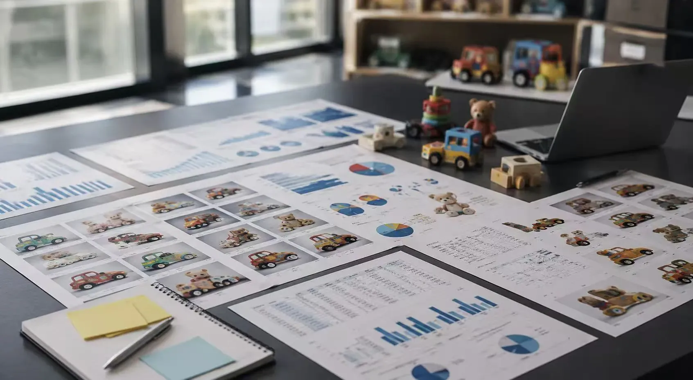

China Sourcing
More supplier options. One coordinated process
We help international buyers search, compare, sample, follow, inspect, and prepare orders across a broad network of Chinese factories.
One sourcing team from search to shipment
Our Shantou and Yiwu teams coordinate the same commercial brief, supplier comparison, sampling, production follow-up, quality inspection, and export plan.
ABERO coordination hub
One accountable team
One brief · one comparison format · one quality plan · one export route
- 01Supplier searchCapability and MOQ match
- 02Quotation comparisonPrice, terms, timing
- 03Sample approvalSpecification and quality
- 04Production follow-upSchedule and status
- 05Quality inspectionChecks before release
- 06Export coordinationDocuments and loading
Buyer receives
Comparable offers, approved samples, and export-ready orders
Match the category to the right production base
Regional strengths help narrow the search and improve the fit between a product requirement and a supplier's actual capability.
01
Shantou
Toys, ride-ons, vehicles, plastic products, and broad category showrooms.
02
Yiwu
Small commodities, accessories, promotional products, and seasonal ranges.
03
Shenzhen
Electronic products, connected components, tooling, and mixed processes.
04
Ningbo
Plastic products, outdoor items, packaging, and export-oriented suppliers.

How we build a product range
Category development is organized around a clear commercial brief and a repeatable selection process.
- 01Analyze the market
- 02Select suppliers
- 03Review samples
- 04Compare quotations
- 05Finalize the assortment